除了圣诞市集，法国冬天还有哪些热闹可以凑？
法国旅游发展署 ·

一到冬天去法国旅行，
很多人的第一反应大概就是：
逛圣诞市集！
…
热红酒、姜饼、闪闪发亮的装饰，
还有空气里飘着的香甜气息…
梦幻温馨，当然没毛病。
但是！法小旅可要提醒一下，
冬季的法国各种节庆传统百花齐放，
圣诞市集不过是冰山一角。
以下这些五花八门的热闹活动&传统习俗
同样值得一探！
01.
图尔 | Tours
过一个有主场优势的
圣马丁节

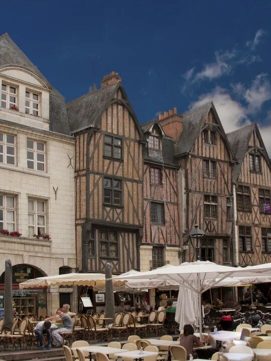

图尔老城的普吕姆罗广场 | Place Plumereau
©iStock-Faabi
每年11月11日，法国图尔都会迎来一位特别的“老朋友”—圣马丁 (Saint Martin)。这一天不仅是纪念圣马丁的节日，也与秋收结束、冬季来临的传统时节相连。
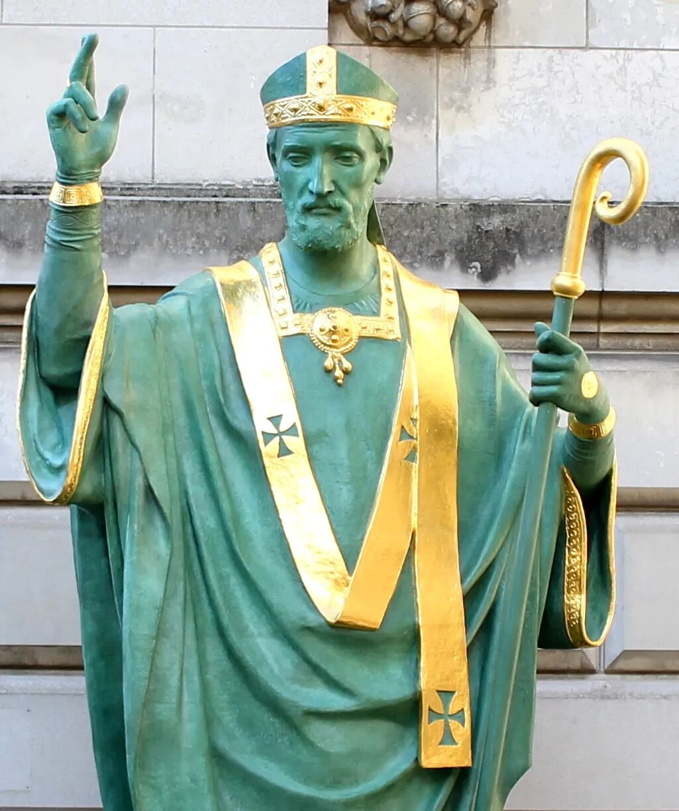
位于图尔的圣马丁雕像
©GrandCelinien / Wikimedia Commons，CC BY-SA 3.0
圣马丁是图尔的主保圣人，也是这座城市重要的精神象征。他出生于公元4世纪，年轻时曾在罗马军队服役。传说一个寒冷的冬日，他在亚眠 (Amiens) 城门外遇见一位衣不蔽体的乞丐，便将自己的军袍一分为二，送给对方。这个故事也让圣马丁成为慈悲与慷慨的象征。
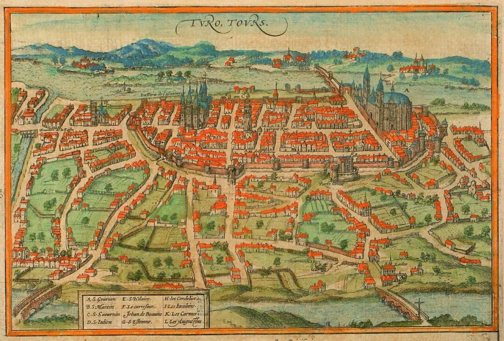
16世纪的图尔城地图
©Alain.Darles / Wikimedia Commons，CC BY-SA 3.0
后来，圣马丁离开军队，投身修道生活，并于约公元371年成为图尔主教。他在卢瓦尔河畔创立马尔穆捷修道院 (Abbaye de Marmoutier)，致力于传播基督教。397年圣马丁去世后，遗体被运回图尔安葬。此后，他的墓地逐渐发展为欧洲重要的朝圣地，也让图尔在中世纪成为法国重要的宗教中心。
1600多年过去了，圣马丁依然是图尔城市记忆中不可或缺的一部分。
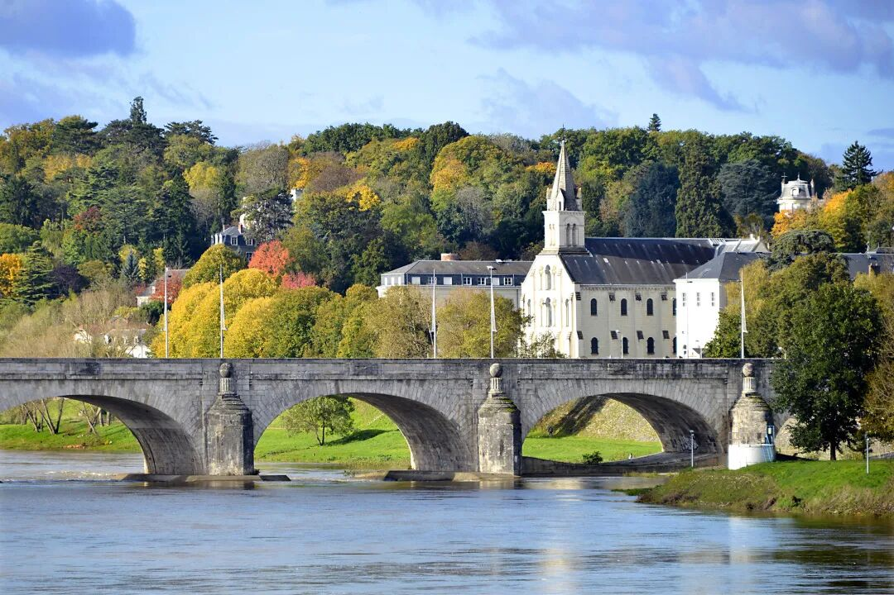
图尔威尔逊桥 | Pont Wilson
©iStock-Musat
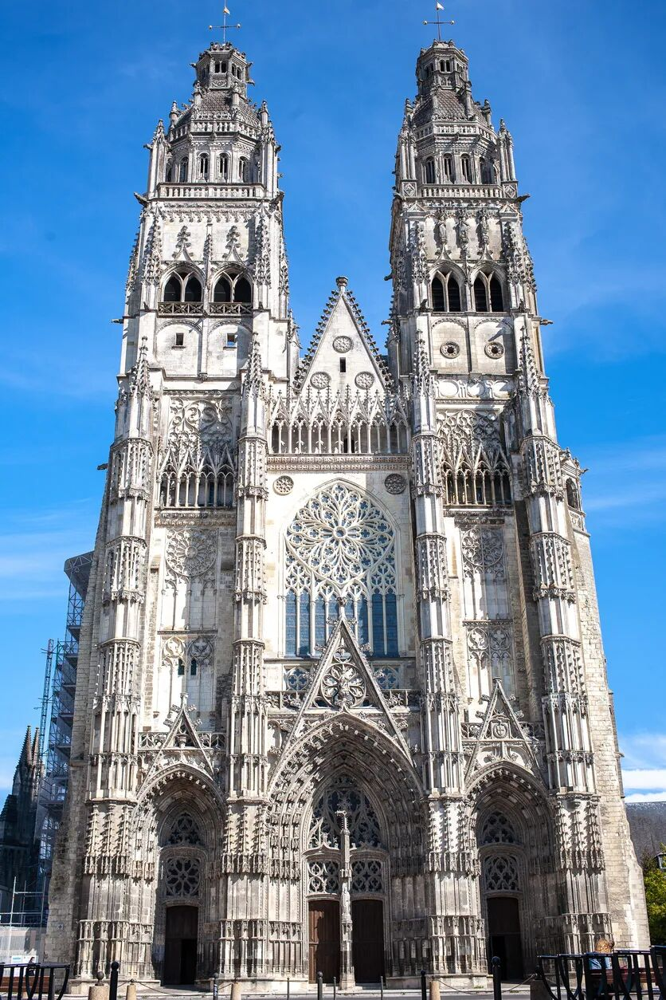
图尔圣加蒂安大教堂 | Cathédrale Saint-Gatien
©iStock-Gulnara Dautova
< 凑热闹提示 >
今年11月10日至11日，图尔教区将举办圣马丁节庆祝活动。其中最值得体验的，当属11月10日晚的灯笼游行：参与者从圣加蒂安大教堂 (Cathédrale Saint-Gatien) 出发，手持烛灯，穿过老城街道，最终抵达圣马丁大教堂 (Basilique Saint-Martin)。沿途跟着人群走一走，也许比单纯参观教堂更能感受到这座城市与圣马丁之间的深厚联系。
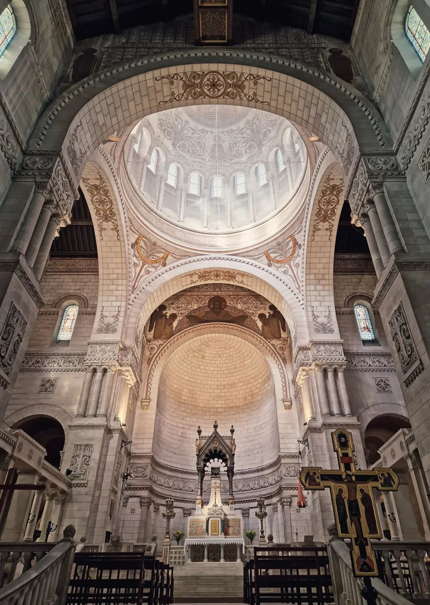
圣马丁大教堂内景 | Basilique Saint-Martin
©iStock-Andrei Bordeianu
02.
巴约纳 | Bayonne
没人能拒绝一位
爱送礼物的神秘老头
不是住在北极的圣诞老人！谢谢
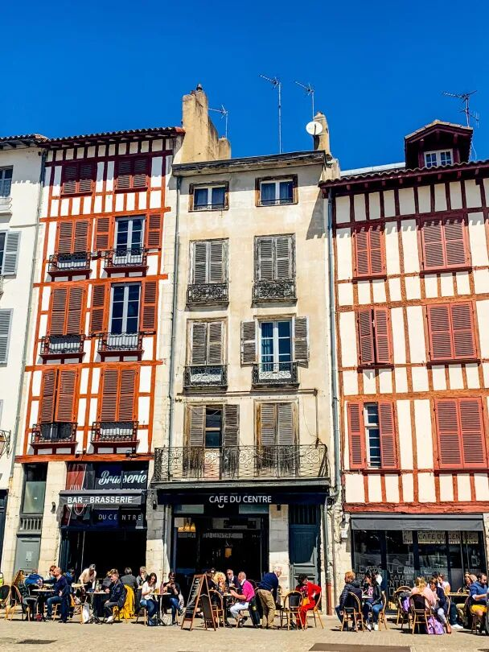

©iStock-anouchka
在法国西南部的巴斯克地区 (Pays Basque)，圣诞季有一位画风截然不同的神秘来客：Olentzero。他是一位从山区走下来的炭烧工。脸上沾着煤灰，戴着贝雷帽，穿着朴素的旧衣服，背着装有木炭的袋子——朴实又接地气，亲切得像自家爷爷。
©Amikuzeko Ikastola-Office de Tourisme de Bayonne, Olentzeroren lagunak-Office de Tourisme de Bayonne
在巴斯克传统中，Olentzero 是冬至的报信人。他的到来意味着一年中最漫长的黑夜即将过去，此后尽是光明和温暖。木炭既是他职业的标志，也让人联想到冬日里蛰伏的生命，以及重新燃起的太阳。
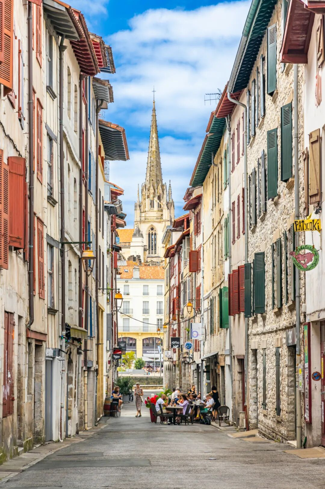
©iStock-Jean-Luc Ichard
< 凑热闹提示 >
冬季造访巴约纳，不妨留意当地的 Olentzero 游行庆典。往年活动通常在12月20日前后举行，今年的官方日程尚未公布。届时，扮演 Olentzero 的演员会乘船从尼夫河（Nive）上岸，在欢歌笑语的簇拥下走街串巷，给小朋友分发糖果和“煤炭”造型的甜食。
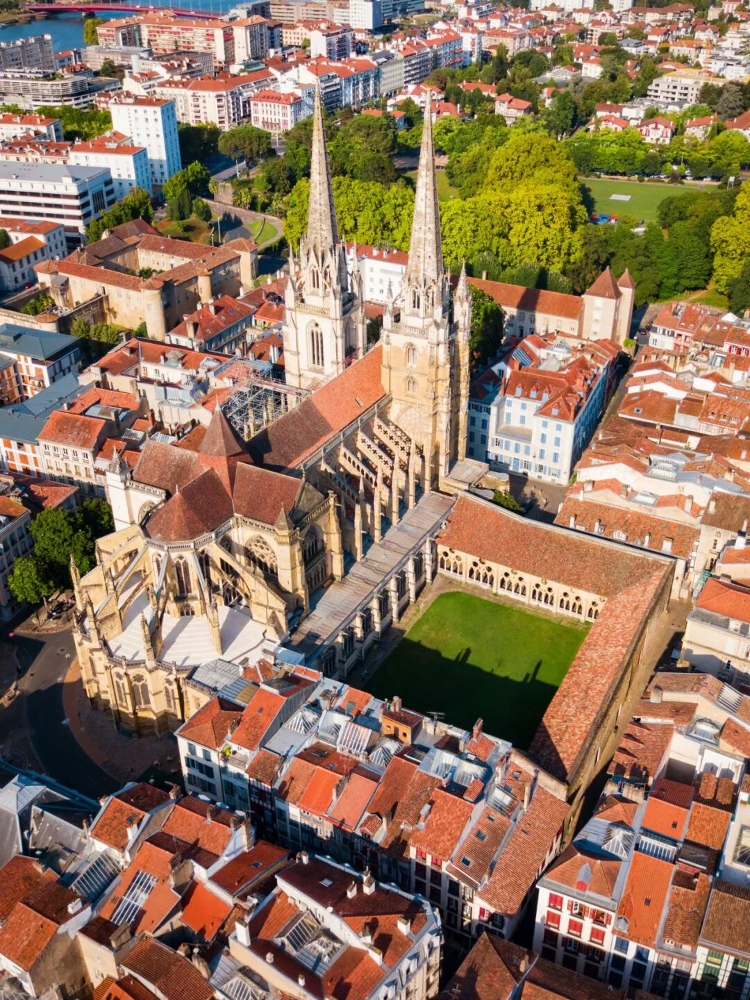
©iStock-saiko3p

03.
朗斯 | Lens
让火焰照亮矿区

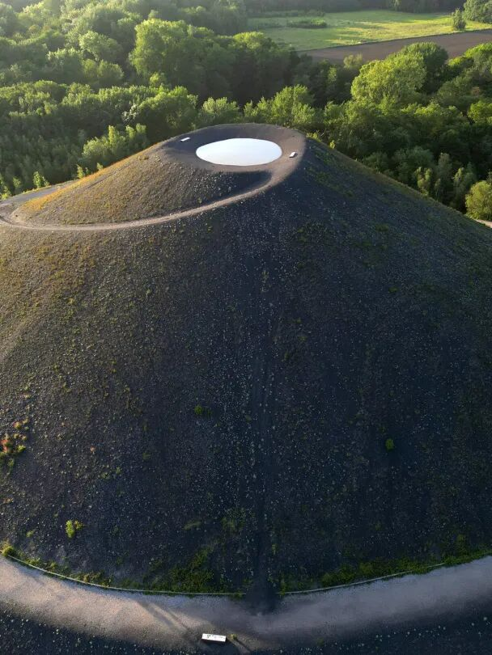

位于 Oignies 的矿山废石堆
©iStock-claffra
在北部，上法兰西大区的小城朗斯 (Lens)，这里的矿业文化遗址与矸石堆 (Terrils) 被列为联合国教科文组织世界文化遗产。在这里，12月4日的圣芭芭拉节 (Sainte-Barbe) 是一个特别的日子。
圣芭芭拉是矿工与炮兵的守护圣人。在加来海峡省 (Pas-de-Calais) 这片昔日的矿区，井下工作始终伴随着瓦斯、塌方与爆炸的风险。矿工是一个个家庭的经济支柱，每一次下井，都意味着将自己的安危交给幽暗的地底。在那个物资有限、工作条件艰苦的年代，圣芭芭拉也成为许多矿区家庭的精神寄托。
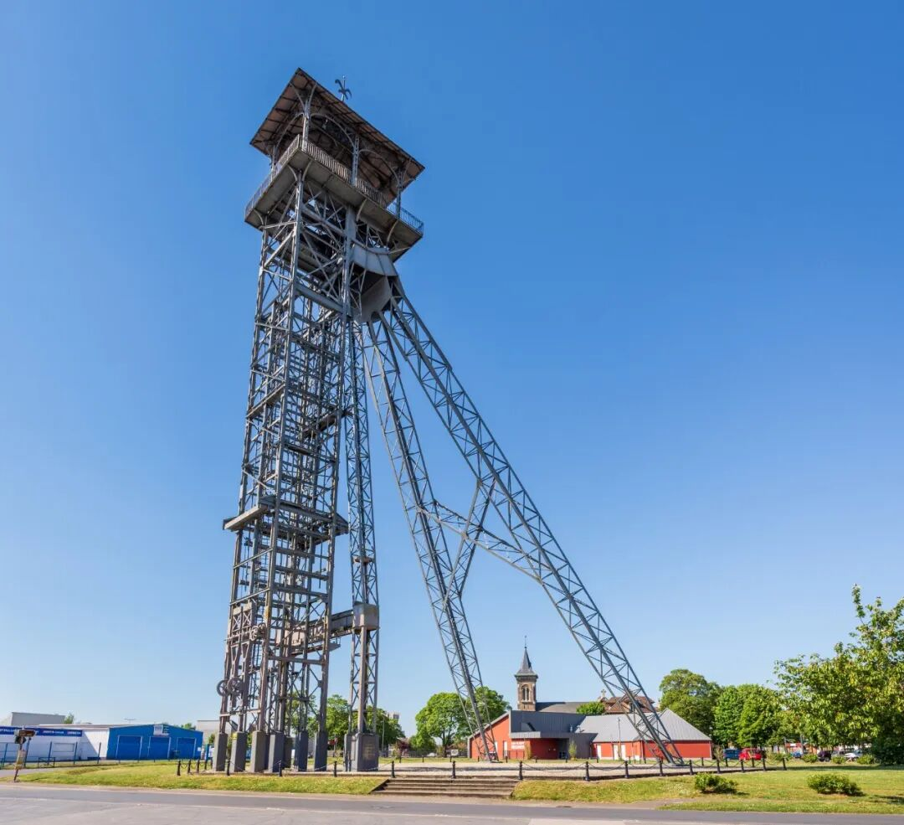
列万 (Liévin) 的 Liévin 1 bis 号矿井井架
©iStock-olrat
自2018年创办以来，朗斯—列万地区 (Lens-Liévin) 的圣芭芭拉艺术节 (Festival de la Sainte-Barbe)，已经成为当地冬季的一场重头戏。
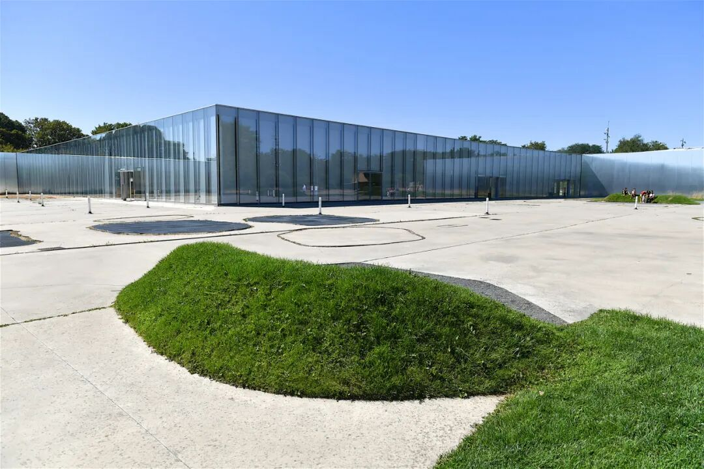
朗斯卢浮宫分馆
©iStock-Olivier DJIANN
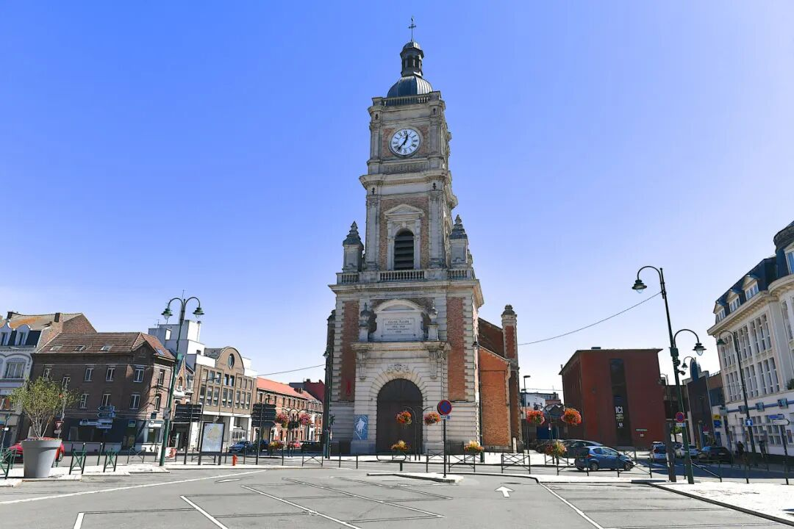
朗斯老城城景 | Église Saint-Léger de Lens
©iStock-Olivier DJIANN
朗斯地区还有很多一战遗址，比如这座极具艺术感的加拿大国家维米纪念碑 (Canadian National Vimy Memorial)——纪念在第一次世界大战中牺牲的加拿大远征军成员
©iStock-Imladris01
<< 滑动查看 >>
届时，昔日的矿井遗址、矿渣山将被重新点亮。火焰装置、烟火表演、音乐演出和街头巡游轮番登场。曾经轰轰烈烈的工业文化，以充满想象力的艺术形式重新回到人们眼前，也唤醒了北方矿区居民共同的历史记忆。
< 凑热闹提示 >
2026年，圣芭芭拉艺术节以朗斯为中心，周边多个矿业遗址都会变身艺术现场。
12月4日｜朗斯
市中心上演街头表演《Tumulte》；20:45，Jean Perrin 科学学院 (Faculté des sciences Jean Perrin) 花园将带来融合机械装置、火焰与音乐的烟火大秀。
© Florent Burton-Pas-de-Calais Tourisme
12月5日｜Loos-en-Gohelle 或 Oignies
两个小镇距离朗斯不远，可以任选其一。 Loos-en-Gohelle 的矿业遗址将上演融合游乐园与烟火元素的互动演出，日落后还有传统的矿渣山登顶活动；Oignies 的矿业遗址则有街舞、音乐与烟火表演，晚间还有电子音乐现场。
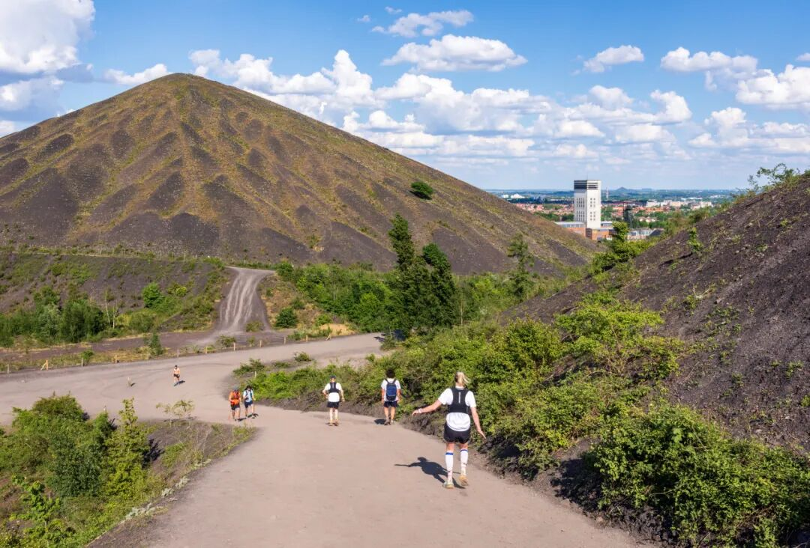
位于Loos-en-Gohelle的矿山废石堆
©iStock-olrat
12月6日｜卢浮宫朗斯 (Louvre-Lens)
公园内有乐队演出、家庭表演和互动工作坊，压轴节目则以巨型恐龙、视觉艺术和烟火带来一场奇幻演出。
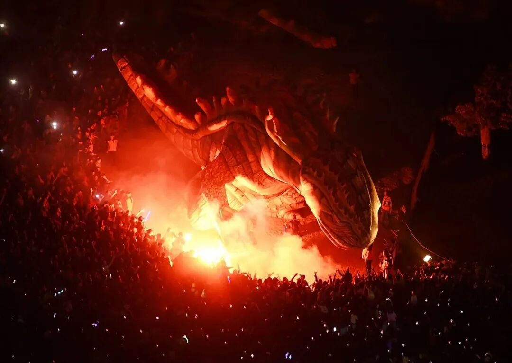
© Plasticiens volants-Pas-de-Calais Tourisme

04.
欧西塔尼 | Occitanie
肥肝市集开始营业
吃货请就位
法国人迎接冬天，当然少不了美食。
在法国西南部的欧西塔尼大区，每年秋冬之交，乡村市集便陆续热闹起来。这里的鹅鸭养殖传统由来已久，肥肝 (foie gras) 更是当地冬季餐桌上的重要角色。

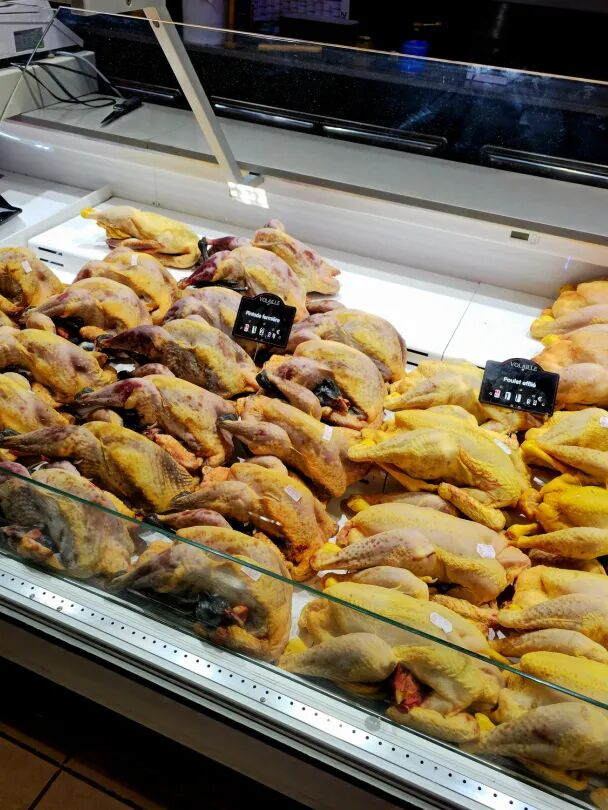

图卢兹维克多雨果市场
©iStock-Rafael_Wiedenmeier
从11月到次年3月，多个城镇都会举办肥肝市集 (marchés au gras)。新鲜肥肝、整鸭、鹅等当地特色产品纷纷上架。慕名而来的不只有当地居民和游客，还有来自世界各地的星级主厨、美食家和餐厅主理人。
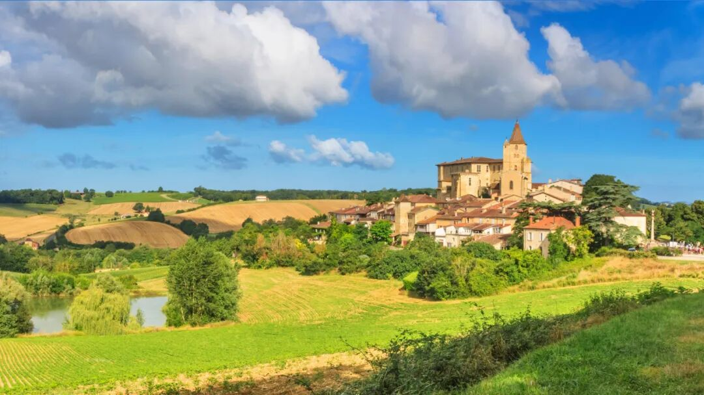
欧西塔尼地区典型乡村风光-拉瓦尔当村 | Lavardens
©iStock-rustamank.jpg
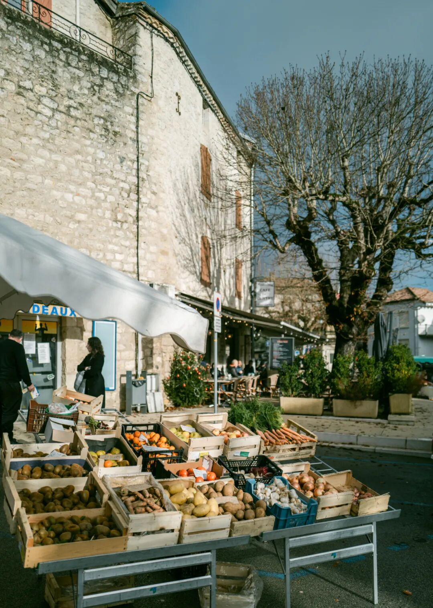
一个宁静的洛特省小镇市集
©iStock-Chalffy
市集不只是买卖食材的地方，也是认识当地生产者、感受乡土风情的好机会。想尝尝地道的法国西南风味，这一站可别错过。
< 凑热闹提示 >
欧西塔尼大区已公布2026—2027季各地肥肝市集日历。如果要推荐一个，不妨关注肥肝产量第一省—热尔省 (Gers) 的首府萨马唐 (Samatan) 市集。这里是当地颇有名气的肥肝交易地，市集通常在每周一上午举行，想挑到心仪的美味，记得早点到场！其他城镇也有不同日期的集市，出发前建议查看当地旅游局公布的日历，并再次确认具体时间。
浓厚的鹅肝带来质感和香气的双重暴击
©iStock-SvetlanaSF

05.
普罗旺斯 | Provence
一款普罗旺斯式的
圣诞夜

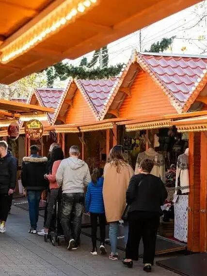

© Aygul Bulte-Avignon Tourisme
来到法国南部的普罗旺斯，
冬天的气氛又变得温暖而柔软。
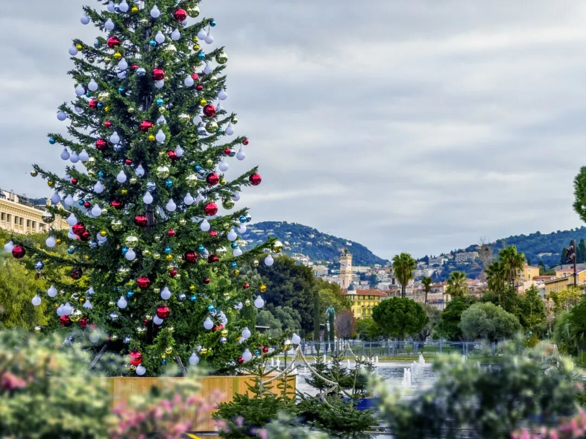
©iStock-imagedepotpro
按照当地习俗，普罗旺斯的圣诞季从12月4日的圣芭芭拉节一直延续到次年2月2日的圣烛节 (Chandeleur)。而圣诞夜的一个重要仪式，叫作“cacho-fio”。
©iStock-ChristiLaLiberte, iotbeaumes/Wikimedia Commons，CC BY 2.0
这个普罗旺斯词语可以理解为“点燃木柴”。按照传统，家中年龄最长和最小的成员要一起捧起一根果木柴，连续三次淋上煮熟的葡萄酒，再将它放入壁炉点燃。
一老一少共同完成这个动作，仿佛也象征着家族与传统的延续：长辈把祝福交给晚辈，一家人一起迎接新的一年。
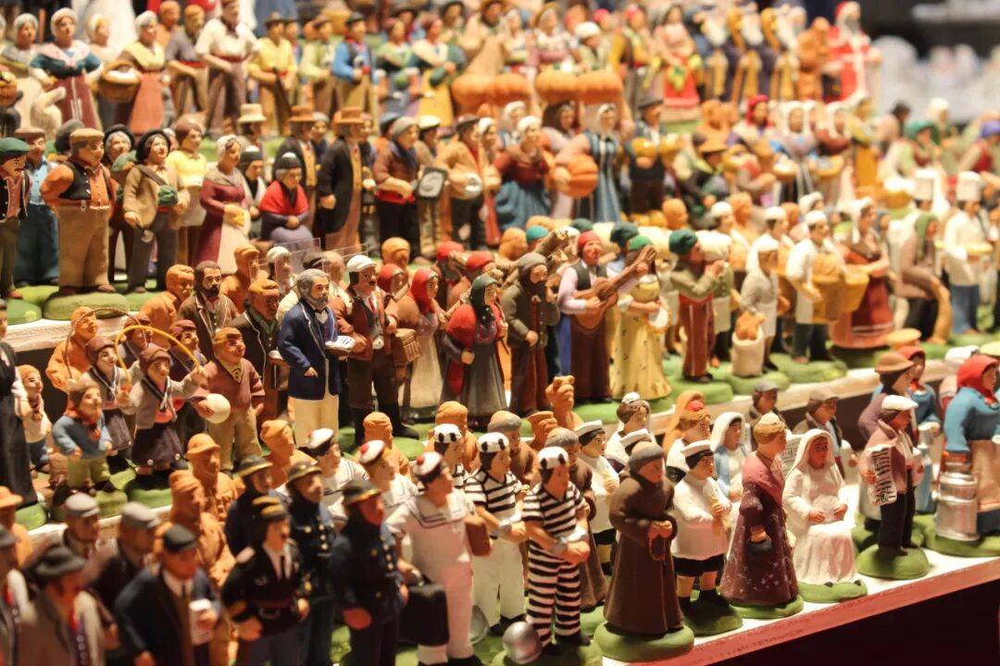
用桑顿陶俑 (Santons) 装饰耶稣降生的圣诞马槽小景观，也是非常普罗旺斯的特色
©iStock-Aygul Bulte
随后，全家围坐共享圣诞晚餐 (Gros Souper)，最后以十三道传统甜点 (Les Treize Desserts) 为节日画上甜蜜句号。
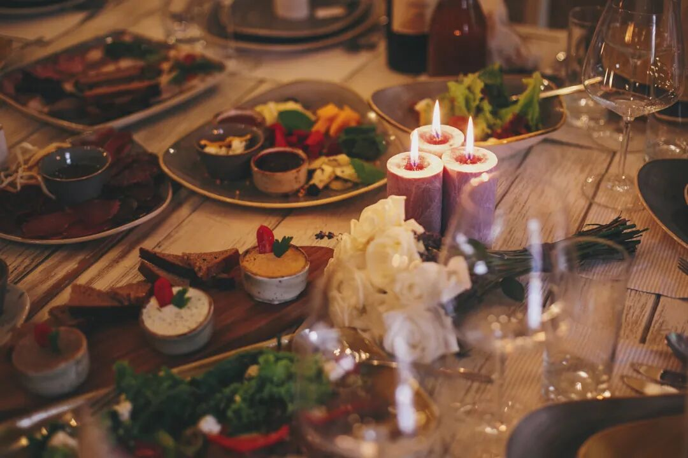
©iStock-Bogdan Kurylo
< 凑热闹提示 >
冬季来到普罗旺斯，若有机会受邀加入当地家庭共度圣诞，一定要体验一次 cacho-fio 仪式。相比热闹的街头庆典，这场围绕壁炉展开的家庭仪式或许更安静，却同样是普罗旺斯人迎接冬天的重要方式。

所以，这个冬天如果你恰好在法国，
不妨走出熟悉的圣诞市集，
去多多探索别样的精彩。
毕竟，旅行嘛，
光看热闹还不够，最好还能凑进热闹里。
说不定凑着凑着，
你就从一个路过的游客，
变身“当地人”，完美融入了呢~
来吧，这个冬天，
让我看看谁才是凑热闹第一名！


法小旅的官网有更多精彩消息